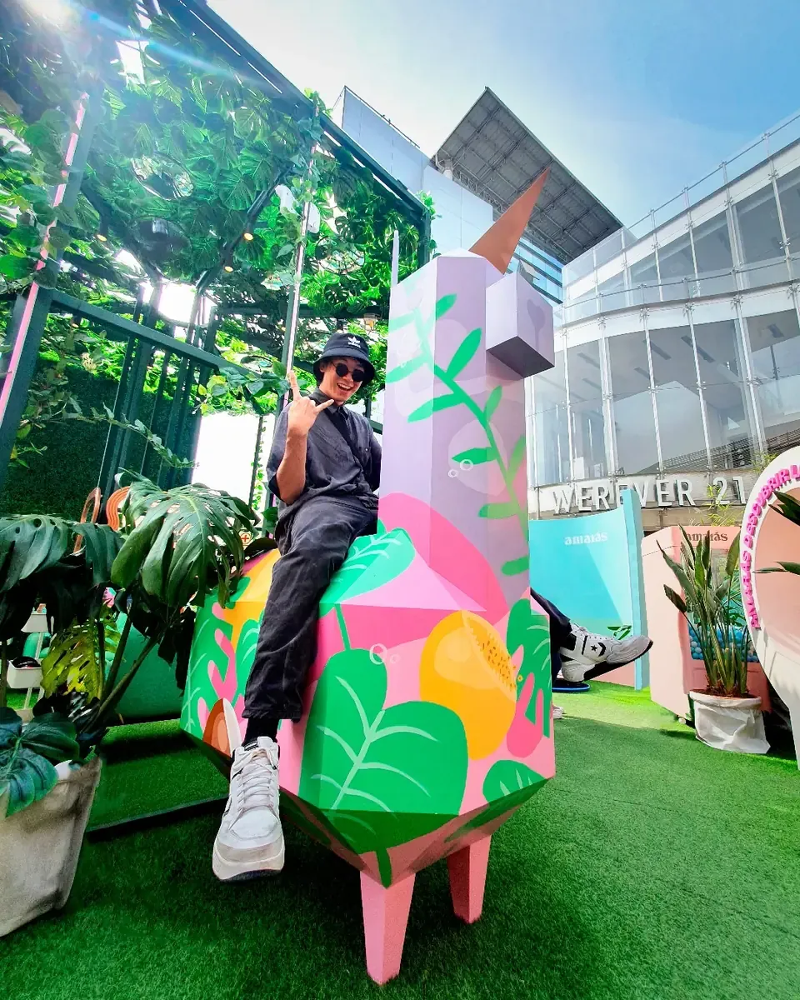
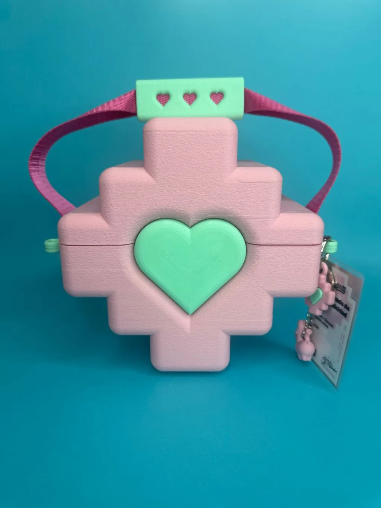

Llamicornios
La llama andina se encuentra con el unicornio pop. Un personaje que vive en carteras, fósforos, juguetes y piezas de colección.
Personaje · ProductoLima · Perú · Desde 2009
Peruano con raíces chinas y japonesas. Diseño personajes que mezclan iconografía andina con estética pop japonesa —y los llevo del dibujo al objeto, del objeto al metaverso.

Llamicornios Toy design
La llama andina se encuentra con el unicornio pop. Un personaje que vive en carteras, fósforos, juguetes y piezas de colección.
Personaje · ProductoChullo + Llamicornio. La pieza que usó Jason Momoa.

Diseño de producto e impresión 3D: del boceto a la pieza física.

Gracias a Phillip Chu Joy, la pieza llegó a la premiere de Minecraft en México y la usó Jason Momoa. Un pedazo de Perú en el centro de un estreno global.

Diseñador gráfico, diseñador de juguetes, gestor cultural digital en Minecraft, bailarín de locking y creador de los Llamicornios. Mi trabajo parte de mi identidad: peruano con raíces chinas y japonesas.
Más de diez años fusionando cultura e iconografía peruana con estética pop japonesa. Más de 40 exposiciones en Perú, Chile, México, España, Bélgica, Japón y Argentina.
Latin American Design Awards 2015 · Nikon Photo Contest 2013 (3.er puesto internacional) · Toulouse Lautrec Imagen 2011 (1.er puesto).